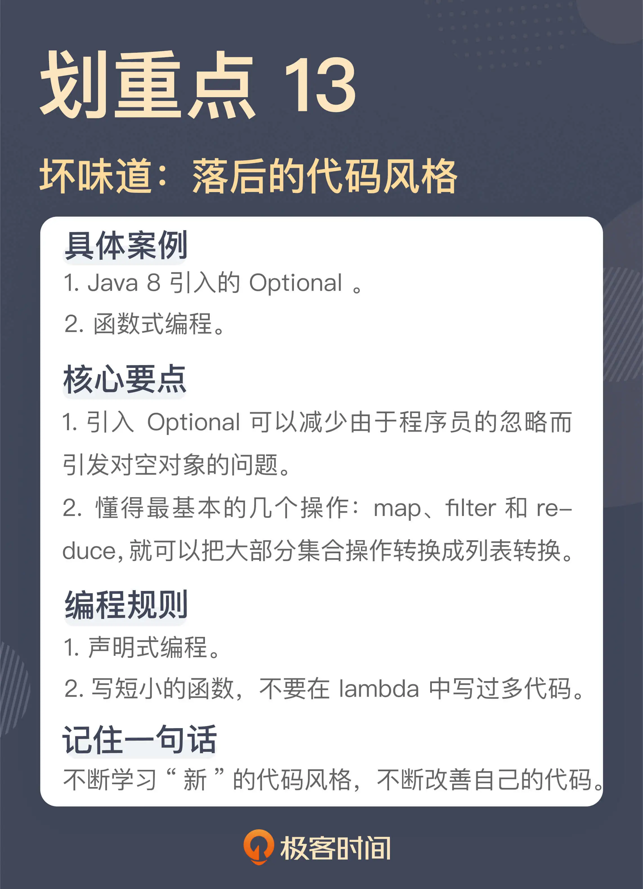

- 00 开篇词 这一次，我们从“丑”代码出发.md.html
- 01 缺乏业务含义的命名：如何精准命名？.md.html
- 02 乱用英语：站在中国人的视角来看英文命名.md.html
- 03 重复代码：简单需求到处修改，怎么办？.md.html
- 04 长函数：为什么你总是不可避免地写出长函数？.md.html
- 05 大类：如何避免写出难以理解的大类？.md.html
- 06 长参数列表：如何处理不同类型的长参数？.md.html
- 07 滥用控制语句：出现控制结构，多半是错误的提示.md.html
- 08 缺乏封装：如何应对火车代码和基本类型偏执问题？.md.html
- 09 可变的数据：不要让你的代码“失控”.md.html
- 10 变量声明与赋值分离：普通的变量声明，怎么也有坏味道？.md.html
- 11 依赖混乱：你可能还没发现问题，代码就已经无法挽救了.md.html
- 12 不一致的代码：为什么你的代码总被吐槽难懂？.md.html
- 13 落后的代码风格：使用“新”的语言特性和程序库升级你的代码.md.html
- 14 多久进行一次代码评审最合适？.md.html
- 15 新需求破坏了代码，怎么办？.md.html
- 16 熊节：什么代码应该被重构？.md.html
- 17 课前作业点评：发现“你”代码里的坏味道.md.html
- 结束语 写代码是一件可以一生精进的事.md.html
- 捐赠
13 落后的代码风格：使用“新”的语言特性和程序库升级你的代码
你好，我是郑晔。
上一讲，我们讲的是因为代码不一致造成的坏味道，其中我提到的“方案不一致”，是因为随着时间的流逝，总会有一些新的方案产生，替换原有的方案。这其中，最明显的一个例子就是程序设计语言。没有哪门语言是完美的，所以，只要有一个活跃的社区，这门语言就会不断地演进。
从 C++ 11 开始，C++ 开始出现了大规模的演化，让之前学习 C++ 的人感觉自己就像没学过这门语言一样；Python 2 与 Python 3 甚至是不兼容的演化；Java 也是每隔一段时间就会出现一次大的语言演进。
也正是因为语言本身的演化，在不同时期接触不同版本的程序员写出来的程序，甚至不像是在用同一门语言在编程。所以，我们有机会看到在同一个代码库中，各种不同时期风格的代码并存。
通常来说，新的语言特性都是为了提高代码的表达性，减少犯错误的几率。所以，在实践中，我是非常鼓励你采用新的语言特性写代码的。
这一讲，我们就以 Java 为例，讲讲如何使用“新”语言特性让代码写得更好。其实，这里的“新”只是相对的，我准备讨论的是 Java 8 的语言特性，按照官方的标准，这是一个已经到了生命周期终点的版本，只不过，从语言特性上来说，Java 8 是最近有重大变更的一个版本，而很多程序员的编码习惯停留在更早的版本。
Optional
我们先来看一段代码：
String name = book.getAuthor().getName();
这是我们在讲“[缺乏封装]”时用到的一个例子，我们这里暂且不考虑缺乏封装的问题。即便如此，严格地说，这段代码依然是有问题的。因为它没有考虑对象可能为 null 的场景。
所以，这段代码更严谨的写法是这样：
Author author = book.getAuthor();
String name = (author == null) ? null : author.getName();
然而，在很多真实的项目中，这种严格的写法却是稀有的，所以，在实际的运行过程中，我们总会惊喜地发现各种空指针异常。如果你要问程序员为什么不写对象为 null 的判断，答案很可能出乎你意料：他们忘了。
是的，忘了，就是这么简单得令人发指的理由。
不用过于责备这些程序员缺乏职业素养，因为这不是个体问题，而是行业整体的问题，IT 行业每年都会因此造成巨大的损失。空指针的发明者 Tony Hoare 将其称为“自己犯下的十亿美元错误”。
对于这个如此常见的问题，Java 8 中已经给出了一个解决方案，它就是 Optional。Optional 提供了一个对象容器，你需要从中“取出（get）”你所需要的对象，但在取出之前，你需要判断一下这个对象容器中是否真的存在一个对象。用这个思路可以这样改写这段代码：
class Book {
public Optional<Author> getAuthor() {
return Optioanl.ofNullable(this.author);
}
...
}
Optional<Author> author = book.getAuthor();
String name = author.isPresent() ? author.get().getName() : null;
这种做法和之前做法的最大差别在于，你不会忘掉判断对象是否存在的过程，因为你需要从 Optional 这个对象容器中取出存在里面的对象。正是这多出来的一步，减少了“忘了”的概率。
也是因为多了 Optional 这个类，这段代码其实还有更简洁的写法：
Optional<Author> author = book.getAuthor();
String name = author.map(Author::getName).orElse(null);
有了 Optional，我们可以在项目中做一个约定，所有可能为 null 的返回值，都要返回 Optional，以此减少犯错的几率。关于 Optional，我在《软件设计之美》中花了[专门的篇幅]进行了介绍，你有兴趣的话，不妨进一步了解一下。
事实上，鉴于空对象是一个普遍存在的问题，一些程序设计语言甚至为此专门设计了语法，比如，类似的代码用 Kotlin 或 Groovy 写出来的话，应该是这下面这样：
val author = book.author
val name = author?.name
函数式编程
Optional 是 Java 8 引入的新特性，它的出现改变了编写 Java 代码的习惯用法。接下来，我们来看看另外一个改变我们代码习惯用法的特性。
在讲“[滥用控制语句]”那一讲时，我留下了一个尾巴，说循环语句本身就是一个坏味道。接下来，我们就来说一下这个问题。我们还是先从一段代码开始：
public ChapterParameters toParameters(final List<Chapter> chapters) {
List<ChapterParameter> parameters = new ArrayList<>();
for (Chapter chapter : chapters) {
if (chapter.isApproved()) {
parameters.add(toChapterParameter(chapter));
}
}
return new ChapterParameters(parameters);
}
这是一段向翻译引擎发送章节信息前准备参数的代码，这里首先筛选出审核通过的章节，然后，再把章节转换成与翻译引擎通信的格式，最后，再把所有得到的单个参数打包成一个完整的章节参数。
如果按照 Java 8 之前的版本理解，这段代码是一段很正常的代码。当 Java 的时代进入到 8 之后，这段代码就成了有坏味道的代码。
Martin Fowler 在《重构》的第二版中新增的坏味道就包括了循环语句（Loops）。之所以循环语句成了坏味道，一个重要的原因就是函数式编程的兴起。不是我们不需要遍历集合，而是我们有了更好的遍历集合的方式。
我在《软件设计之美》讲[函数式编程的组合性]时曾经提到过，函数式编程的一个重要洞见就是，大部分操作都可以归结成列表转换，其中，最核心的列表转换就是 map、filter 和 reduce。在函数式编程日益重要的今天，列表转换已经成为了每个程序员应该必备的基本功。
了解了这些，你就知道为什么循环语句是坏味道了，因为大部分循环语句都是在对一个元素集合进行操作，而这些操作基本上都可以用列表操作进行替代。
再者，一般来说，采用列表转换写出来的代码相较于传统的循环语句写出来的代码，表达性更好，因为它们都是描述做什么，而传统的循环语句是在描述怎么做。我在这个专栏已经多次说过了，这是两种不同的抽象层次，描述做什么比怎么做的代码，在表达性上要好得多。
有了这些基础，我们再来看这段代码。这段代码中有一个循环语句，正如前面所说，这个循环语句在处理的是一个集合中的元素，所以，这个循环语句是可以用列表转换的方式代替的。
具体怎么做呢？其实，这里的行为我们在前面已经分析过了，就是先筛选出审核通过的章节，这个过程对应着 filter，然后，把筛选出来的章节转换成通信中的参数，这个过程对应着 map，最后，把转换的结果搜集起来，这个过程对应着 reduce。所以，这段代码可以改写成这样：
public ChapterParameters toParameters(final List<Chapter> chapters) {
List<ChapterParameter> parameters = chapters.stream()
.filter(Chapter::isApproved)
.map(this::toChapterParameter)
.collect(Collectors.toList());
return new ChapterParameters(parameters);
}
经过这样的改造，一个循环语句就彻底被一个列表转换的操作替换掉了（这里的 collect 函数对应着 reduce 操作）。在这段代码中，我们用到了 Java 8 提供的一些基础设施，比如，Stream、lambda 和方法引用等等。
或许有人会说，这段代码看着还不如我原来的循环语句简单。不过，你要知道，两种写法根本的差别是侧重点不同，循环语句是在描述实现细节，而列表转换的写法是在描述做什么，二者的抽象层次不同。
对于理解这段代码的人来说，二者提供的信息量是完全不同的，循环语句必须要做一次“阅读理解”知晓了其中的细节才能把整个场景拼出来，而列表转换的写法则基本上和我们用语言叙述的过程一一对应。所以，理解的难度是完全不同的。
这段代码只是为了说明问题，而选择了简单的代码，但在实际工作中，需求会比这复杂得多。而且，如果要添加新的需求，循环语句里的代码会随之变得越来越复杂，原因就是循环语句里都是细节，而列表转换则是一段一段的描述，就像在阅读一篇文章。
很多人之所以更喜欢使用循环语句而不是列表转换，一个重要原因是对于列表转换的基础还不了解。只要多写几次 filter、map 和 reduce，理解它们就会像理解选择语句和循环语句一样自然。
到这里有人会说：“你说得有点道理，但为什么我的感觉和你不一样，在实践中，我也使用了这种风格，为什么写出来的代码感觉更难理解了？”对于这一点，一个常见的原因就是，你在列表转换过程中写了太多代码。
自从 Java 里引入了 lambda，因为写起来实在是太容易了，很多人就直接在列表转换过程中写 lambda。lambda 本身相当于一个匿名函数，所以，很多人在写函数中犯的错误在 lambda 里也一样出现了，最典型的当然就是长函数。
在各种程序设计语言中，lambda 都是为了写短小代码提供的便利，所以，lambda 中写出大片的代码，根本就是违反 lambda 设计初衷的。最好的 lambda 应该只有一行代码。
那如果一个转换过程中有很多操作怎么办呢？很简单，提取出一个函数，就像前面代码中的 toChapterParameter，它负责完成从 Chapter 到 ChapterParameter 的转换。这样一来，列表转换的本身就完全变成了一个声明，这样的写法才是能发挥出列表转换价值的写法。
在这一讲中，我们以 Optional 和函数式编程为例，讲解了用“新”的代码风格改进代码，其实，我们在前面的内容中也已经讲了不少“新”的代码风格，比如，使用 Java 8 的时间日期类型、try-with-resource 等等。在讲解的过程中，我也提到过不少的编码风格实际上是停留在过去，比如，变量初始化的习惯。
你可以看到，代码风格有一个逐步演化的过程，每个程序员对此的理解程度都有所差异，所以，如果我们不加注意的话，各种代码风格会并存于代码之中，加剧代码的理解难度，这就是我们上一讲讲到的坏味道：不一致。
一种编程风格会过时，本质上是因为它存在问题，新代码风格就是用更好的方案解决它，就像今天讲到的 Optional。所以，我们要不断学习新引入的语言特性，了解它们给语言带来的“新”风格，而不要停留在原地。
总结时刻
今天我们讲了“新”风格对于代码的改善。每一种有生命力的语言都会在自己的生命周期中不断地对语言本身进行改进，无论是引入新的语言特性，还是引入新的程序库，都会对代码的编写产生或多或少的影响。这一讲，我们用来讲解的例子是 Java 8 引入的 Optional 和函数式编程。
Optional 是一个对象容器，它的出现是为了规避空对象带来的各种问题。Optional 的引入可以减少由于程序员的忽略而引发对空对象的问题。团队内部可以约定，所有可能返回空对象的地方，都要返回 Optional，以此降低犯错的几率。
函数式编程是一个影响代码整体风格的重要编程范式，然而，对于很多 Java 程序员来说，Java 8 引入的函数式编程支持，只是引入了一些新的程序库。缺乏对于函数式编程的理解，尤其是对于列表转换思维的理解，让我们虽然有了很多很好的工具，却完全无法发挥其功效。
懂得列表转换思维，首先要懂得最基本的几个操作：map、filter 和 reduce，然后，就可以把大部分的集合操作转换成列表转换。想要使用这种思维写好代码，一方面，要懂得声明式代码的重要性，另一方面，要懂得写出短小的函数，不要在 lambda 中写过多的代码。
作为一个精进的程序员，我们要不断地学习“新”的代码风格，改善自己的代码质量，不要故步自封，让自己停留在上一个时代。
如果今天的内容你只能记住一件事，那请记住：不断学习“新”的代码风格，不断改善自己的代码。

思考题
这一讲，我们讲到了不同的代码风格，你有体验过不同的代码风格对于代码库的影响吗？欢迎在留言区分享你的经验。
对于团队来说，逐步将统一将语言特性和程序库统一到新的风格上是一件很重要的事，欢迎你把这节课学到的知识，分享给你的团队。
感谢阅读，我们下一讲再见！
参考资料:
© 2019 - 2023 Liangliang Lee. Powered by gin and hexo-theme-book.